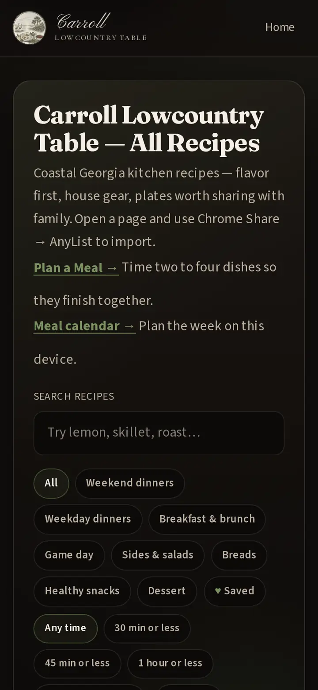
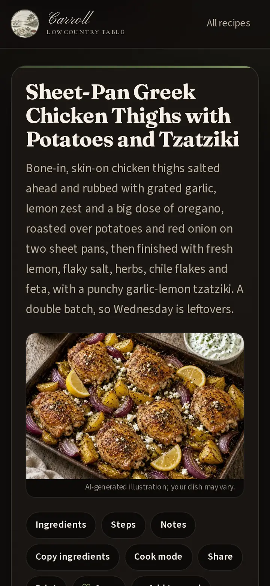
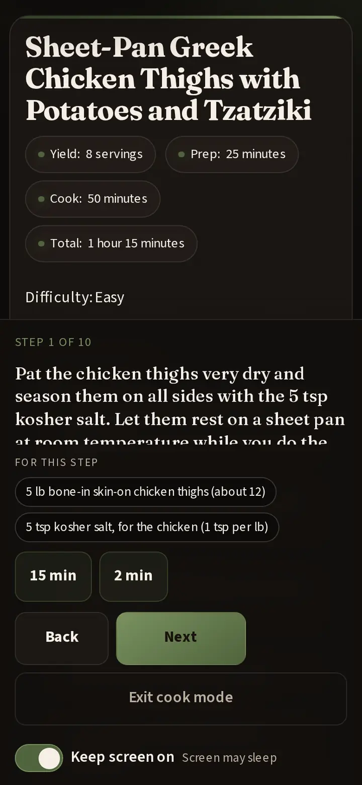
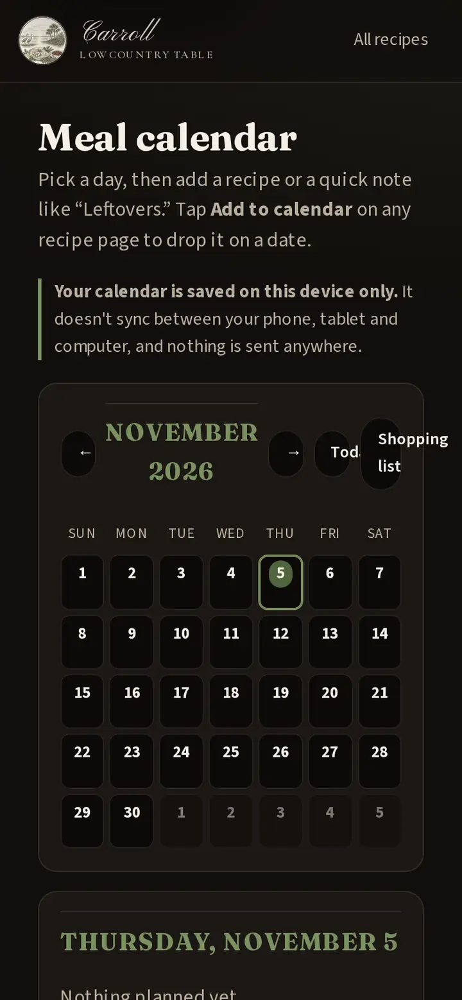

How to use this site
A quick tour of Carroll Lowcountry Table — finding a recipe, cooking from your phone, and planning the week. Nothing here needs an account.
Stays on this device. Saved recipes, My notes, Plan a Meal, the meal calendar, and the shopping list are stored only in this browser on this phone, tablet, or computer. They do not sync to your other devices, and clearing this browser’s site data erases them.
- Find a recipe
- On a recipe page
- Cook mode
- Saved recipes
- Plan a Meal
- Meal calendar
- Shopping list
- Add to your home screen
- App shortcuts
Find a recipe
Open All recipes for the full cookbook, or start from the home page categories.
- Search by dish name or ingredient (try “shrimp” or “oregano”).
- Category cards on the home page jump into weekday dinners, weekend cooks, breakfast, sides, dessert, and more.
- Time chips narrow the list to 30 minutes, 1 hour, or low-and-slow cooks.
- Meatless shows only recipes without meat, poultry, or seafood.

On a recipe page
- Servings — use + and − to scale ingredient amounts.
- Jump links — Ingredients and Steps skip straight to those sections.
- Copy ingredients, Share, and Print sit in the toolbar.
- Save hearts the recipe on this device. + Add to meal and + Add to calendar send it to those planners.
- My notes is a private box at the bottom for your own reminders.
- More from our table suggests a few related recipes.
- AnyList — if you use the AnyList browser extension, it can import from the recipe markup on the page (there isn’t a separate Import button on the site).

Cook mode
Tap Cook mode for a big, step-by-step view while your hands are busy.
- Move with Back and Next.
- When a step names a time (“5 minutes”), a timer chip appears so you can start a countdown.
- For this step chips highlight the ingredients that step uses.
- Turn on Keep screen on so your phone doesn’t dim mid-cook (when your browser supports it).

Saved recipes
Tap Save on any recipe. On All recipes, choose the Saved chip (or open recipes.html#saved) to see only what you’ve hearted. Hearts also show on the cards.
Plan a Meal
Plan a Meal is for building one multi-dish supper — a main plus sides. Add dishes with + Add to meal on recipe pages, then open the planner to order them and cook through the stack.
Meal calendar
On Meal calendar, put recipes on the nights you’ll cook them (breakfast, lunch, or dinner slots). From a recipe page, + Add to calendar asks which day.

Shopping list
On the meal calendar, open Shopping list. It pulls ingredients from the recipes you’ve placed in a date range, groups them, and lets you check things off, copy the list, or share it. Mark pantry staples you already have so they drop off next time.
Add to your home screen
Install the site like an app so it opens full-screen with our icon.
- iPhone / iPad (Safari) — tap the Share button, then Add to Home Screen.
- Android (Chrome) — open the browser menu, then Install app or Add to Home screen.
- Computer (Chrome or Edge) — look for the install icon in the address bar, or use the browser menu’s install option.
Long-press app shortcuts
After it’s on your home screen, press and hold the app icon for quick jumps to Meal calendar, All recipes, Saved recipes, and Plan a Meal.